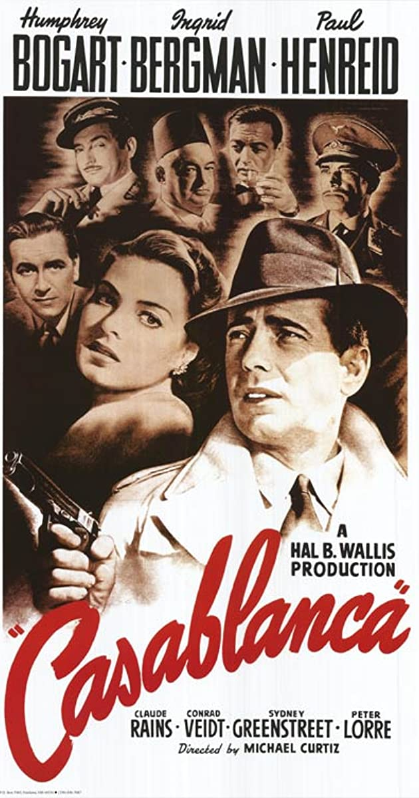

I love watching movies in my free time. I love the storylines that they create and the characters that I can relate to. I am especially a fan of the James Bond, Indiana Jones, and Avengers Movie franchises- especially Iron Man! I also enjoy watching historical biopic movies of true events that took place. Here are some of my favorite movies:



Favorite Actors
If I had to pick one actor as my favorite, it would be Tom Hanks. He has been an American treasure giving us so many great classics over the years. From Forrest Gump to Saving Private Ryan to Mr. Rogers, I also love him because he has also been a good role model away from the screen with the activism that he does. My number one Hanks movie would have to be The Post. Honorable mention would have to be Denzel Washington and Daniel Craig.